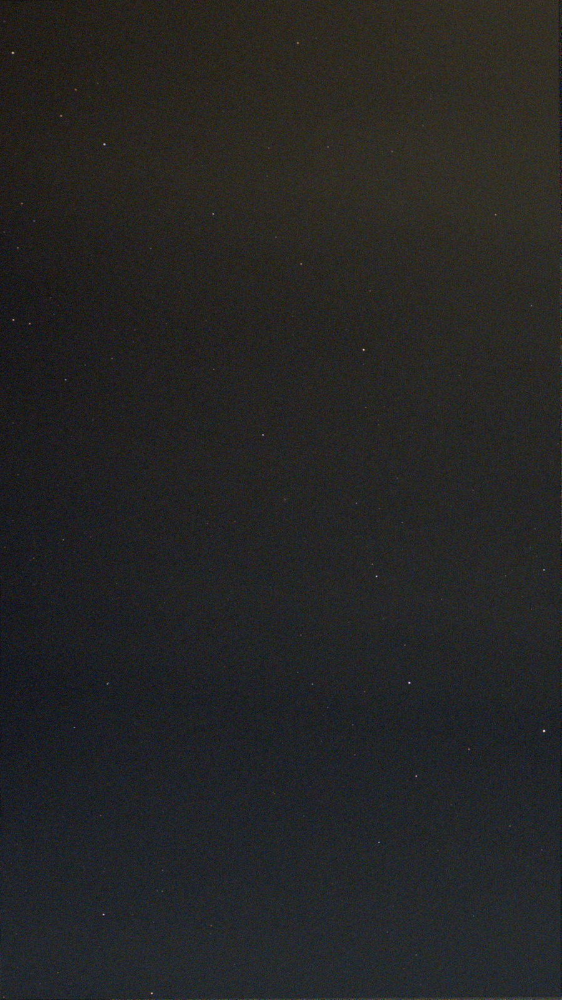

Astrophotography › All targets
M75
Globular Cluster · Sagittarius
Also known as NGC6864

- Type
- Globular Cluster
- Constellation
- Sagittarius
- Position (J2000)
- RA 20h 06m, Dec −21° 55′
- Magnitude
- 8.5
- Integration
- 1 min
- Views in the album
- 1
- Telescope
- ZWO Seestar S30 Pro
Open in the album — the raw stack, the conditioned render, a before/after slider, and this frame on the sky dome.
Deep-sky data from OpenNGC (CC-BY-SA 4.0).